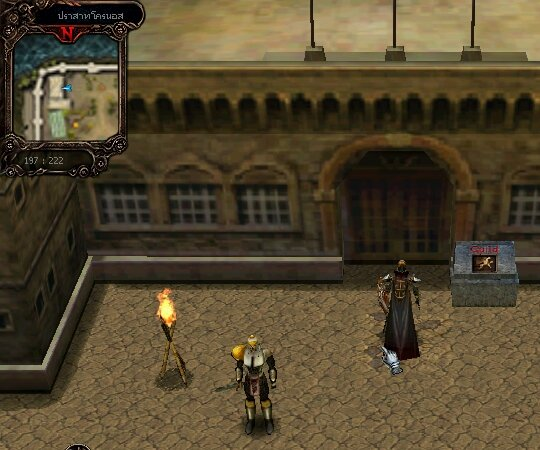
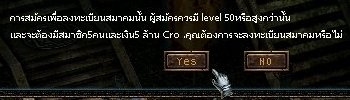

|
|
||
|
เกมไหนๆ ก็ต้องมีการร่วมสมาคมกัน เกม Cronous ก็ต้องมี หุหุหุ จากนั้นก็ไปเมือง Cronous ที่ด้านซ้ายบนของแผนที่ ใกล้ๆ กับ Alfred จะมีทางเข้า ให้เดินเข้าไปบริเวณจุดดังภาพ จะวาร์ปเข้าไปได้ 
โดยผู้ที่จะก่อตั้งสมาคม (Guild) ได้นั้น จะต้องมีคุณสมบัติคือ  |
|
|
||||||||||||||
|
เมื่อสร้าง Guild ขึ้นมาแล้ว ก็จะต้องมีหัวหน้า และสมาชิก โดยแต่ละคนจะมีหน้าที่แตกต่างกันไป
และหากต้องการรับสมาชิกเพิ่มเติม ก็ทำได้โดยการ กด Shift + คลิ๊กซ้าย ที่คนที่ต้องการร่วม Guild แล้วเลือกปุ่มล่างขวา (Guild) โดยใน Guild หนึ่งๆ นั้น สามารถรับสมาชิกได้มากถึง 30 คนเลยทีเดียว |
|
|
||||
|
เมื่อสร้าง Guild ขึ้นมาแล้ว ไม่จบเพียงแค่นี้ เพราะผู้นำ Guild จะต้องสร้าง "ธง" ของ Guild และ "สัญลักษณ์" ของ Guild ขึ้นมาเสียก่อน
เมื่อสร้าง "ธง" และ "สัญลักษณ์" ประจำ Guild ได้แล้ว ต้องไปลงทะเบียนกับทางเว็บไซต์ Cronous เสียก่อน จึงจะทำให้ "ธง" และ "สัญลักษณ์" ประจำ Guild ไปปรากฎในเกม โดยสามารถไปลงทะเบียนได้ที่นี่ ลงทะเบียน "ธง" และ "สัญลักษณ์" ของ Guild หรือส่งรูปกิลไปให้ทางทีมงานที่ info@cronous.in.th อัพรูปเข้าในเกมได้ โดนทีมงานจะ update 1 ครั้ง ต่อ 1 อาทิตย์ |